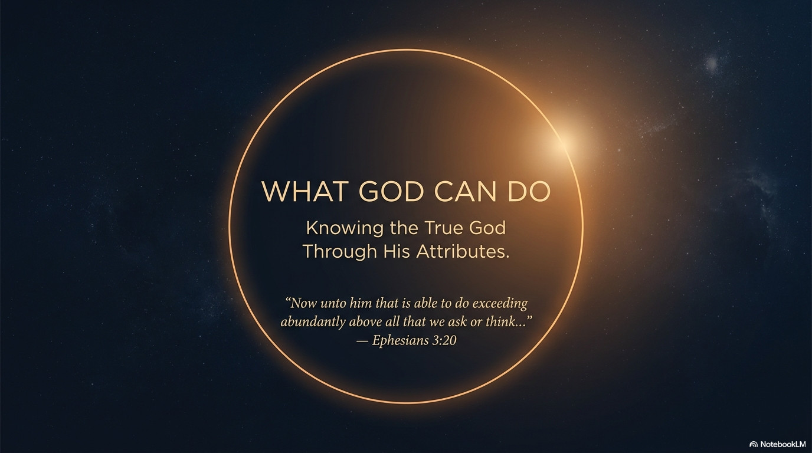

PREVIOUS TEACHING
What God Can Do
Knowing the True God Through His Attributes
“Now unto him that is able to do exceeding abundantly above all that we ask or think…” — Ephesians 3:20
WEB SLIDE DECK
Previous teaching

Use the buttons, the thumbnails, or the left and right arrow keys to move through the teaching.